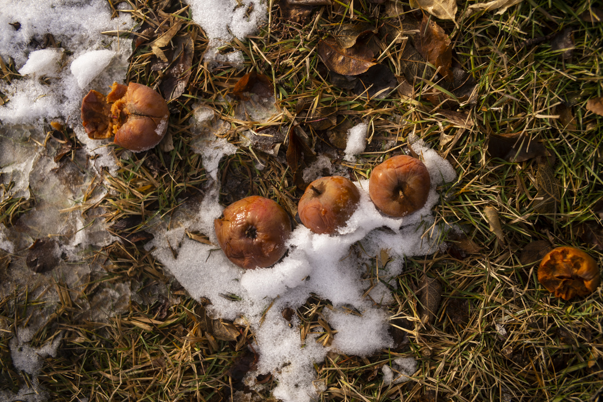
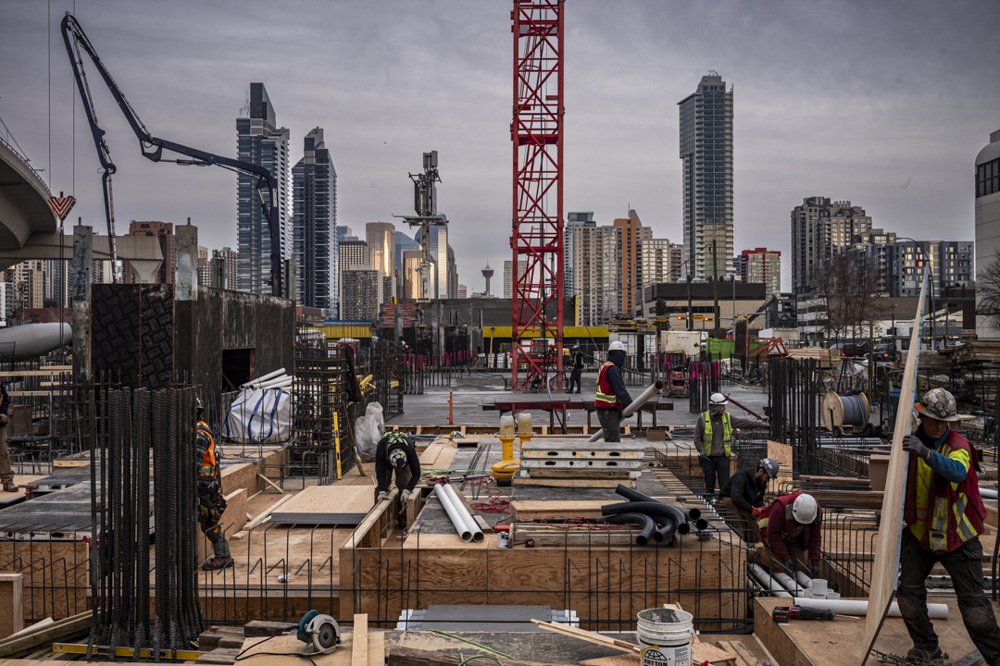
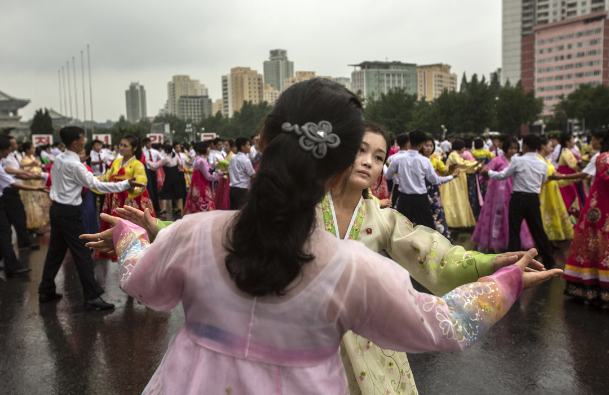

What the photograph keeps.
Preserve is the permanent Artefakt Archive — a publicly accessible record of documentary photography and film made over decades in Chicago, Calgary, across the Americas, and beyond. The archive is both a reference for researchers and a working collection: all new accessions are catalogued, held with consent, and made accessible to researchers for the communities who appear in it.





Preserve — Access
06 / 06
Researchers
The archive is accessible by appointment for journalists, scholars, curators, and community researchers. Write to jon@artefakt.foundation for researcher access or a catalogue of available accessions.
Licensing
For archive licensing, fine art print inquiries, and press use, contact jon@artefakt.foundation.
← Learn
Active programming in Calgary and Chicago.
Sustain →